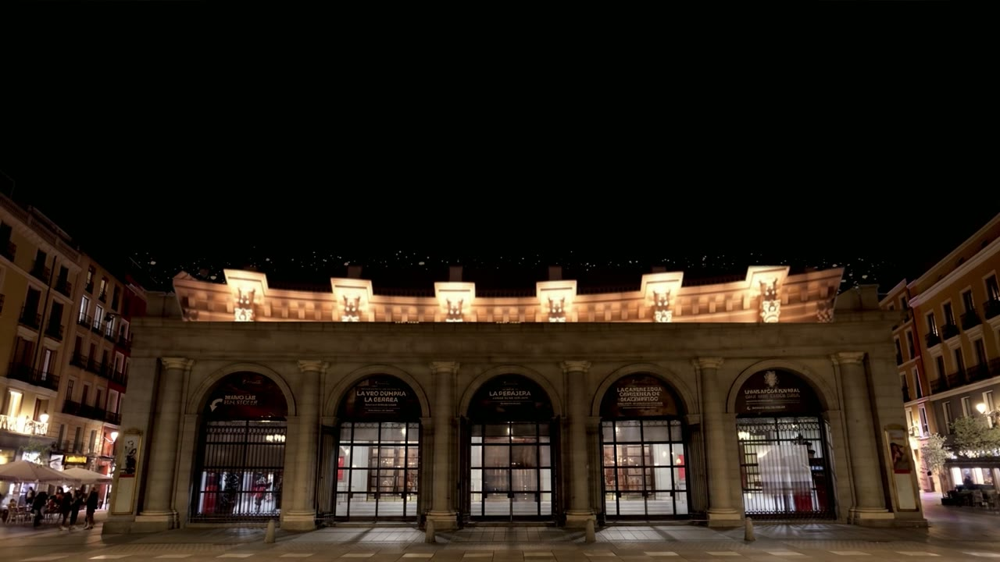
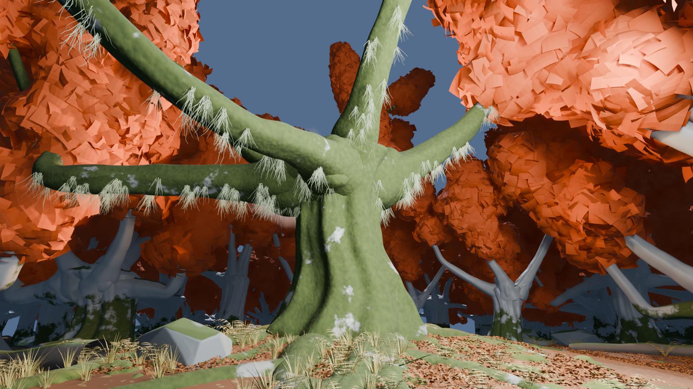

Proyectos destacadosFeatured projects
Cómo se hicieronHow they were made
Cada proyecto tiene su página con el reto, la solución y el desglose del proceso.Each project has its own page with the challenge, the solution and a process breakdown.

FOOH · 3D · VFX
Teatro Real
El teatro se desintegra en polvo. Proyectado en la gala del Teatro Real.The theatre crumbles into dust. Screened at the Teatro Real gala.
Ver casoView case →
3D de producto3D product
Orvane 1822
Un reloj de lujo que se arma pieza a pieza entre nubes.A luxury watch that assembles piece by piece among clouds.
Ver casoView case →
Dirección creativa · En desarrolloCreative direction · In progress
Iratxo
Una ciudad de duendes escondida dentro de un árbol. Del concept al 3D.A goblin city hidden inside a tree. From concept to 3D.
Ver proyectoView project →
IA generativa y agénticaGenerative & agentic AI
Cómo trabajo con IAHow I work with AI
Agentes, addons propios y pipelines en ComfyUI: la IA ejecuta, yo dirijo.Agents, custom add-ons and ComfyUI pipelines: AI executes, I direct.
VerView →